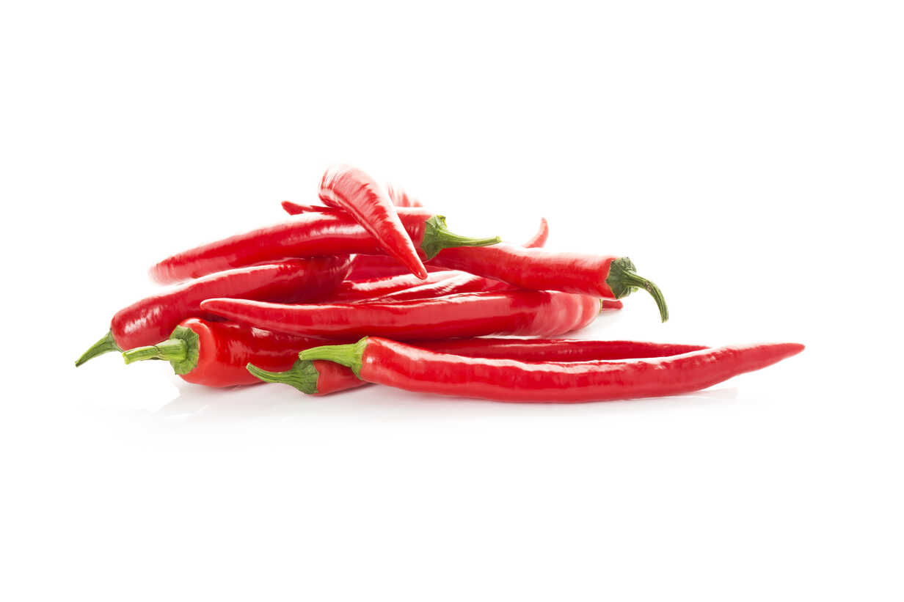

1. Seasons for Growing Chilli

Chillies thrive in warm climates and can be grown during various seasons. The best seasons for growing chillies are:
- Summer: Chillies are generally sown in early summer for optimal growth and yield.
- Monsoon: In tropical regions, chillies can be planted just before or during the monsoon season for rain-fed cultivation.
- Post-Monsoon: In areas with milder winters, chillies can be grown post-monsoon under irrigated conditions.